Padaria artesanal · desde 2018
Viva Bakery
Viennoiserie, canelé, fermentação natural e a cozinha da Karina Ruiz, no Jardim Glória, em Americana.
Ter a sex, 9h às 19h · Sáb, 9h às 16h
- EndereçoRua dos Bambus, 1399 · Jardim Glória
- HorárioTer a sex, 9h às 19h · Sáb, 9h às 16h
- Google4,8 ★ em 1.157 avaliações
Agora na Viva
Pra começar o dia
O que mais sai a essa hora. Toque para ver e pedir.
Cardápio
A vitrine inteira,
a um toque do iFood
Cada item abre a ficha completa, e o botão leva direto para ele no iFood. Na loja tem mais: a vitrine muda todo dia.
Preços do iFood em outubro de 2026. No balcão podem ser diferentes.
A casa
Oito anos de Viva
A Viva abriu em 21 de setembro de 2018, em Americana, pelas mãos da Karina Ruiz e do Gabriel. Morning bun, canelé, galettes, tartines e cruffins chegaram aqui quando quase ninguém no Brasil fazia. No começo era preciso explicar o que cada coisa era. Com o tempo, deixou de ser necessário.
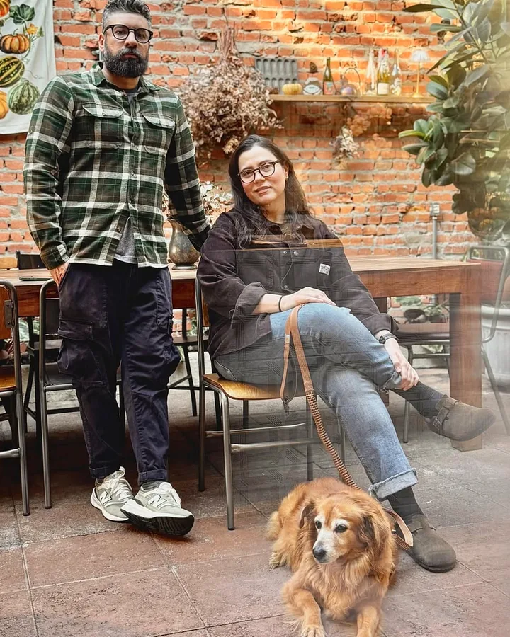
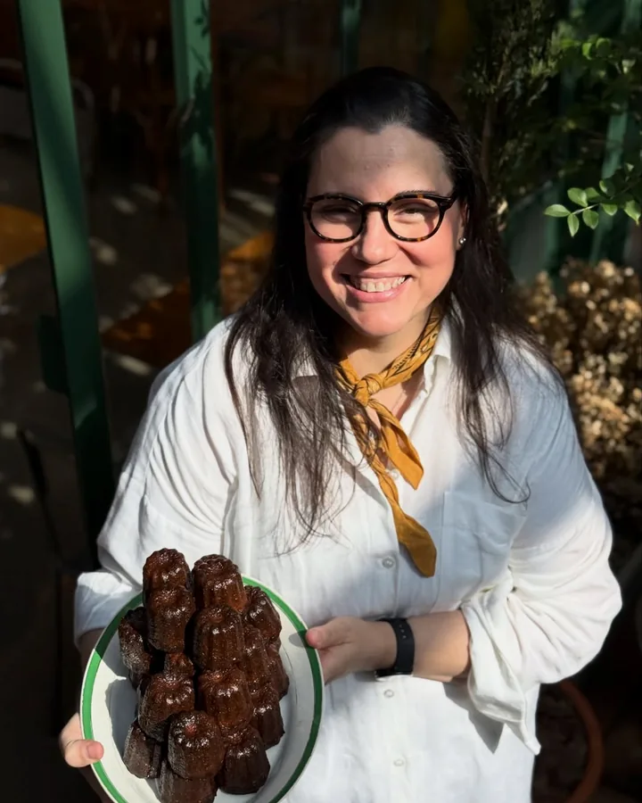
“A influência veio depois da identidade.”
A Viva não construiu sua linguagem tentando descobrir o que o público queria. Construiu uma linguagem própria, acreditou nela durante anos e convidou as pessoas a entrar nesse universo.
O ofício
Feito aqui, desde o começo
Os pães são de fermentação natural. As massas são da casa, feitas com sêmola: as frescas são abertas e recheadas à mão, e as secas passam por uma extrusora italiana com tráfila de bronze, que deixa a superfície porosa para o molho aderir. Boa matéria-prima, técnica e tempo.
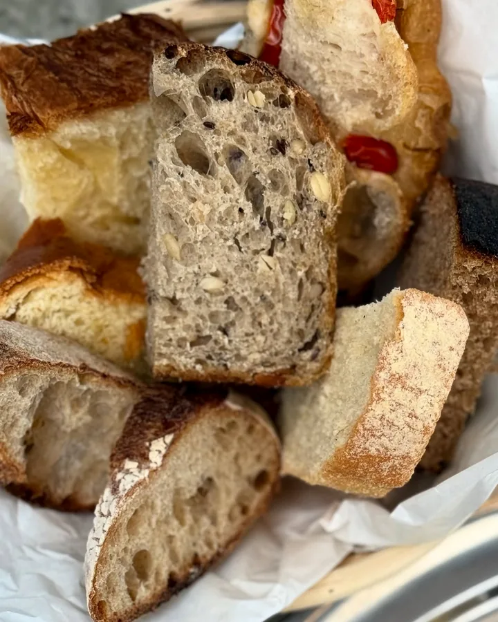
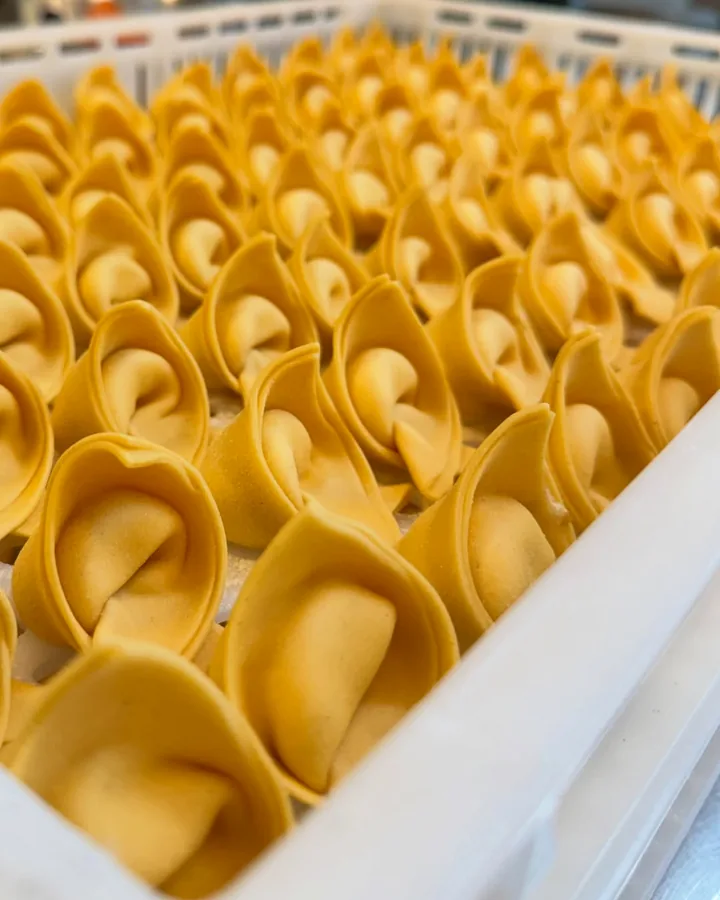
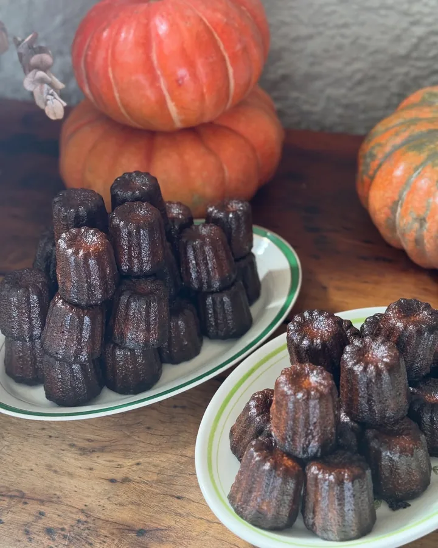
- Pães
- Fermentação natural
- Massas
- Tráfila de bronze
- Café
- Virginia Coffee Roasters
Cursos
Aprenda com a Karina
As receitas que construíram a Viva, em cursos online para fazer em casa. As turmas presenciais esgotam rápido e são avisadas no Instagram.
O lugar
A casa nova, no mesmo endereço
Depois da reforma, a Viva reabriu em outubro com salão de vidro, jardim e a cozinha à vista.
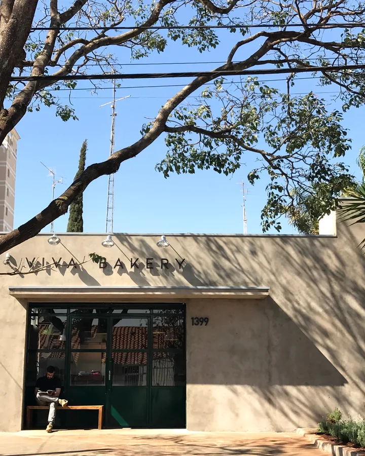
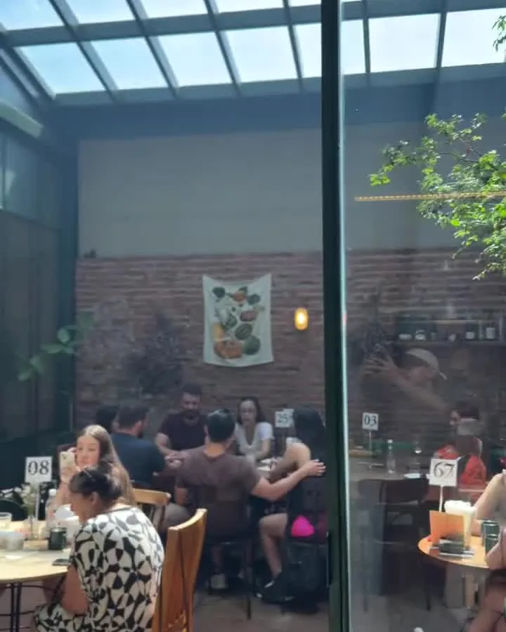
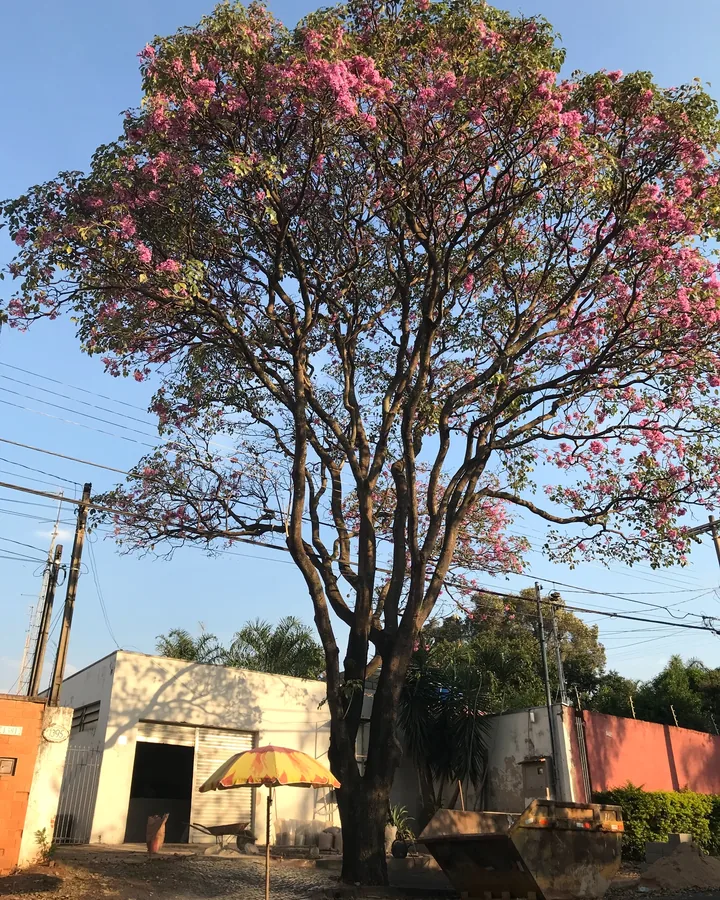
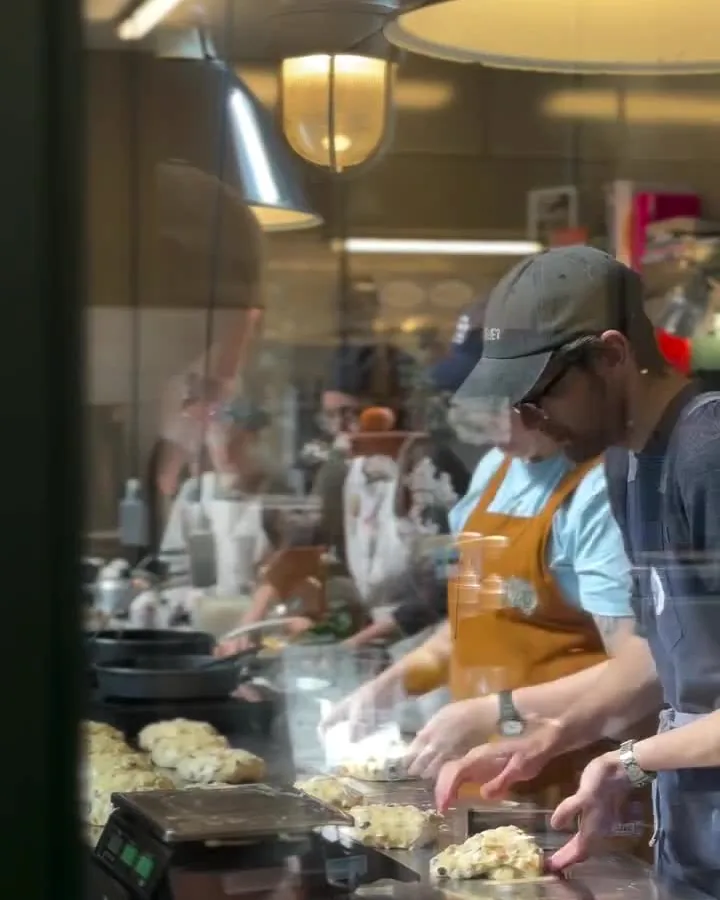
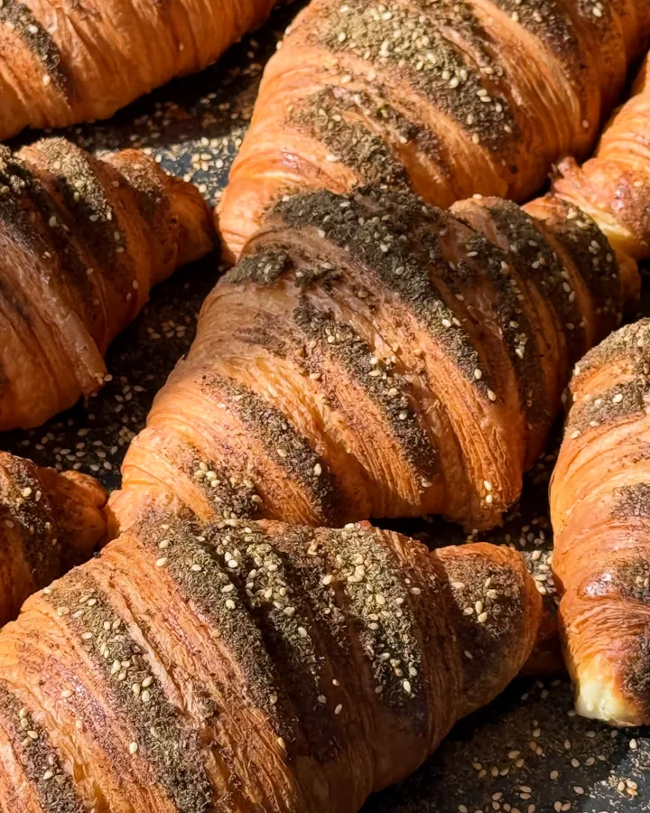
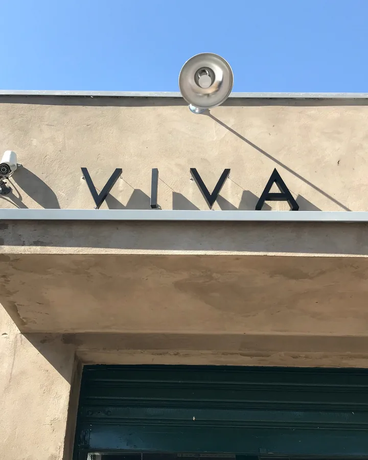
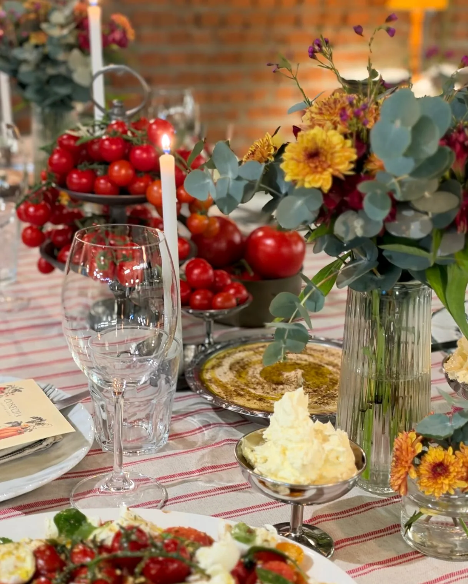
Supper Club
Uma mesa, dez lugares
Jantares fechados para poucas pessoas, com comida, vinho e conversa, e cada prato com a cara da Viva: simples, generoso e feito com cuidado. As próximas datas saem no Instagram.
Acompanhar no InstagramVisite
Passa na Viva
- Endereço
- Rua dos Bambus, 1399 · Jardim Glória
Americana, SP · 13468-120 - Horário
- Terça a sexta, 9h às 19h
Sábado, 9h às 16h
Último domingo do mês, 9h às 14h
Segunda, fechado - Almoço
- A partir das 11h30
- Delivery
- Pelo iFood, com pedido mínimo de R$ 10